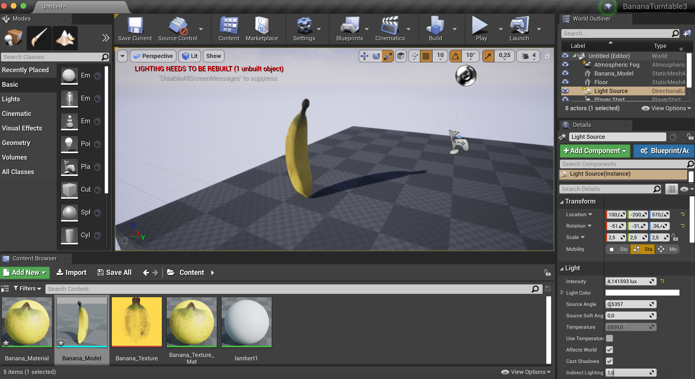
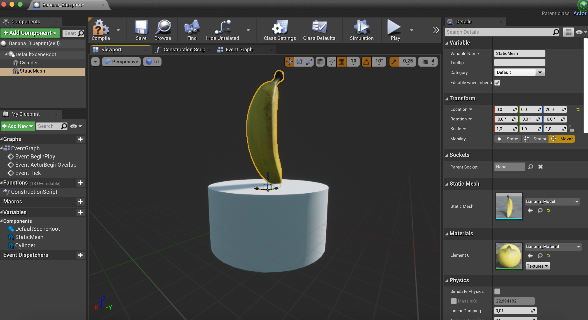
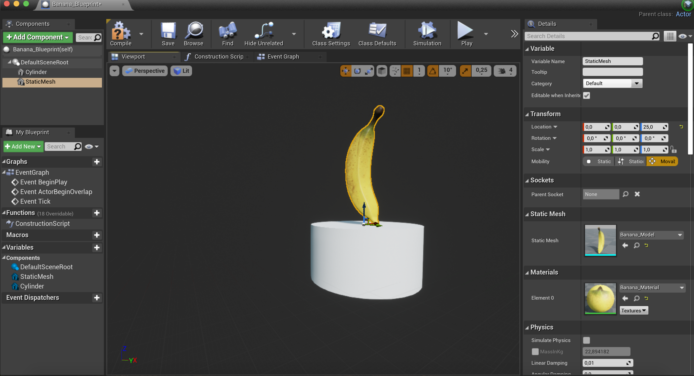
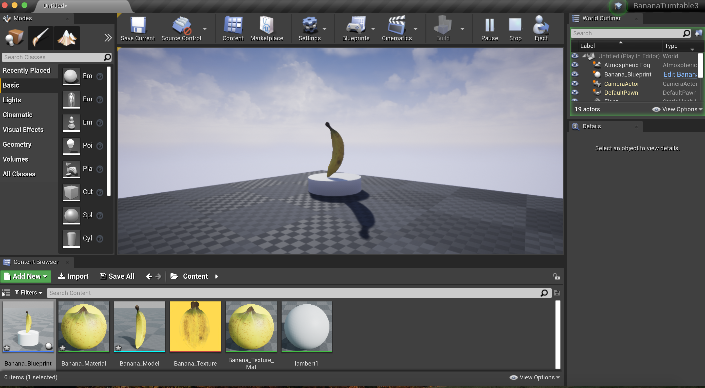
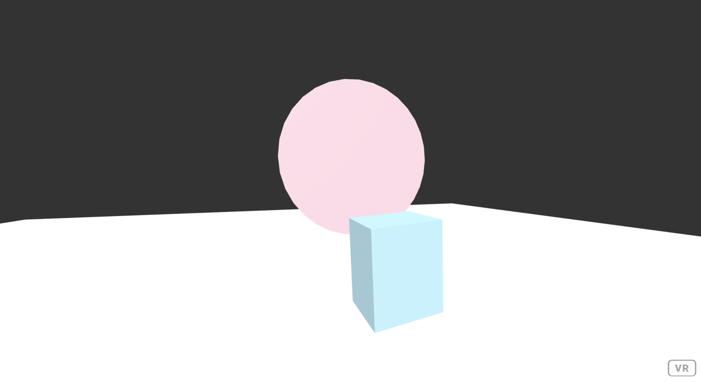

Workshop AR/VR
Unreal Engine
De opdracht over Unreal Engine, ging over het creëren van een ronddraaiende banaan. We hadden hiervoor een bestand gekregen met het model en de textuur van de banaan. Door middel van de uitleg en zelf proberen heb ik uiteindelijk voor gezorgd om met het model en de textuur een banaan te maken en deze op een plateua te plaatsten waar hij kan ronddraaien. De video geeft het eindresultaat van de opdracht.
   A-frame
Link naar opdrachten: https://mila28-06.github.io/A-frame1/